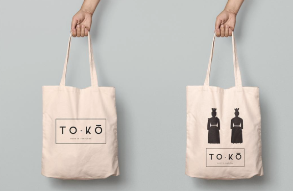
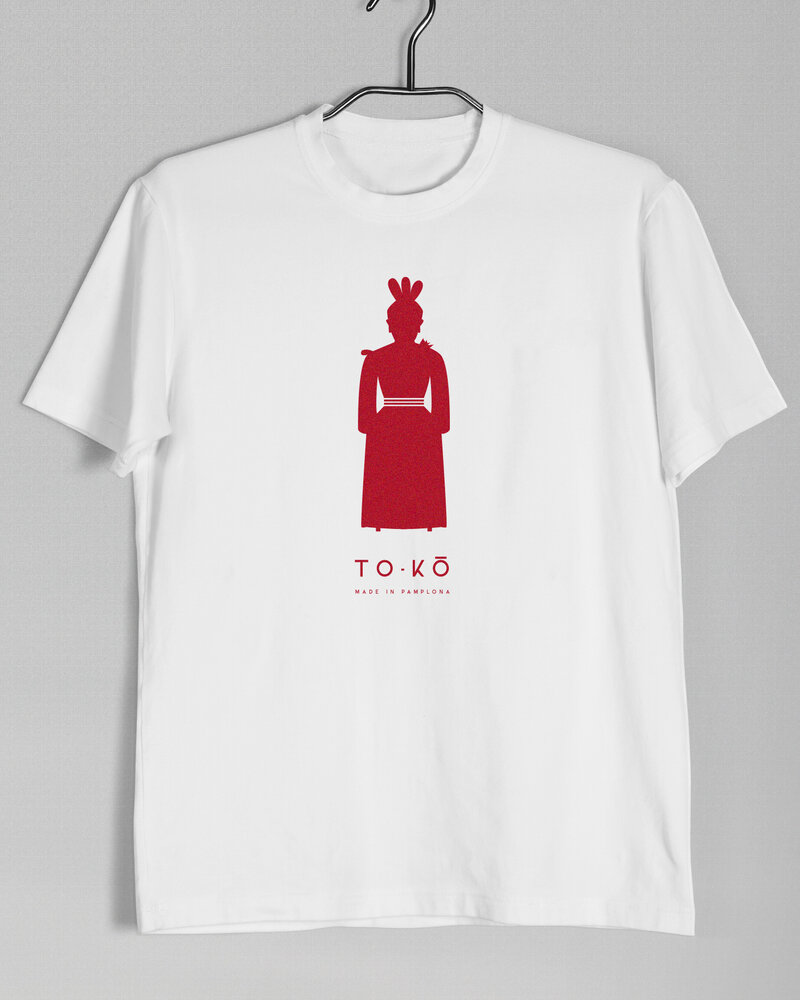
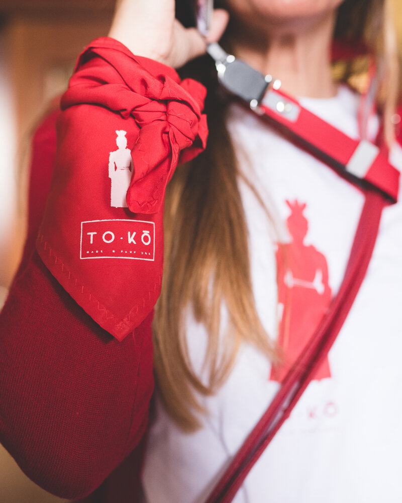

Más que un recuerdo, parte de la experiencia
To-Ko Collection no nace como una colección de productos, sino como una forma de extender lo que se vive. Son piezas que acompañan la experiencia, que la refuerzan y que, en muchos casos, la hacen aún más personal.
Cada propuesta se plantea desde el mismo lugar que el resto de experiencias: entender el contexto, el momento y a las personas que lo van a vivir.
Porque hay experiencias que no terminan cuando acaba el día.
Cómo se construye cada propuesta
No hay un catálogo cerrado. Cada diseño se plantea en función del tipo de experiencia, del grupo y del tipo de recuerdo que se quiere generar.
A partir de ahí, trabajamos sobre una base común: la iconografía y el lenguaje visual de To-Ko, adaptándolo a cada caso concreto.
El resultado no es algo genérico, sino algo coherente con lo que se está viviendo.
Algunas piezas
Cada grupo y cada experiencia es diferente, pero estas son algunas de las formas que puede tomar.



Ediciones To-Ko
Algunas piezas no solo acompañan la experiencia. La representan.
Vino To-Ko · Edición San Fermín
Una edición especial desarrollada junto a una bodega reconocida, pensada para acompañar y prolongar la experiencia.
Cada botella mantiene el equilibrio entre origen y diseño: el carácter del vino, el cuidado de la producción y la identidad visual de To-Ko.
Puede formar parte del propio momento —una comida, un encuentro, un cierre— o quedarse como recuerdo de algo que solo ocurre una vez al año.
En grupos y entornos de empresa, se convierte además en un gesto compartido: algo que permanece más allá de la experiencia.
Una forma de guardar San Fermín cuando ya ha pasado.
Diseñado para cada experiencia
En algunos casos, se trata de reforzar la identidad de un grupo. En otros, de crear un recuerdo tangible de algo que solo ocurre una vez.
También puede formar parte de experiencias más amplias: eventos de empresa, encuentros privados o propuestas personalizadas dentro de San Fermín.
Siempre con la misma idea: que todo tenga sentido dentro de lo que se está viviendo.
Cuéntanos qué te gustaría regalar y diseñamos tus recuerdos a medida.
De dónde nace To-Ko
To-Ko surge de la misma raíz que el resto de experiencias: vivir San Fermín desde dentro.
No como algo que se observa, sino como algo que se entiende, se comparte y se transmite, siempre en línea con nuestra forma de vivir San Fermín que te contamos en quiénes somos.
Por eso cada diseño tiene algo más detrás que una simple imagen.